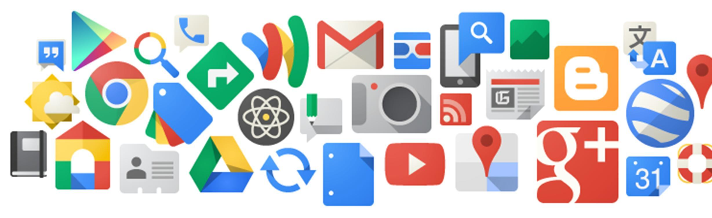

Career Options
Computer Science is a field with a large range of career options that keeps growing every day. For example, Artificial Inteligence, it was and it is still a developing field as the article "The Learning Machines" explains how the Google X lab made huge contributions to AI using deep-learning and how companies like Apple and IBM where competing to get people with that knowledge in their team. This is proof of how Computer Science is still developing since there are plenty of things that aren't discovered or finalized yet, which is great since one major can lead you to many different jobs and if you don't like one, don't worry! There are plenty more options. Some of these options are:
- Software Developer:
- Video Game Designer:
- Security Analyst:
- Web Developer:
- Information Technology Architects:
- And many more careers!!
Use several development environments to write, debug, and modify software for applications. Also write code to create a new application or to complement other services and existing applications. More information
Design video games from the character stories to the code that brings them to life either in a cell phone, a computer, or a console. Test code and fix problems that might arise during the development. More information
Protect a company's information as well as users' sensitive information when using an app or some service. Develop systems that prevent information from being stolen and servers from being hacked. More information
Create or keep web pages updated by modifying the code that makes up the web page. This is computer programming focused on web pages, you can either only focus on the code that creates the design and displays the information. However, you could also think about the design of the web page and the logic behind it like the reason for the colors, fonts and the design itself not only the code to make up the design. More information
Manage the technological aspects of a certain business, ensure compliance with regulations and implement new systems. More information
Companies
Now that almost every bussiness uses technology in some way like the internet, it is safe to say that most businesses need someone with knowledge in Computer Science even if it is purely for creating a web page and keep it updated. That is why most companies hire at least one person with a Computer Science degree. It doesn't matter what sector it is; the Government sector, Health sector, Energy Industry, Financial sector, Transportation, Retail Companies, they all need some sort of service from Computer Scientists.
Some examples of Companies are:
-

- FBI
- Novacoast
- Uber
- Disney
- Raytheon
- and these are just some of them!!
Their mission as a company is "to organize the world’s information and make it universally accessible and useful." If their mission sounds appealing to you, you might be happy working in Google, where according to the article "Looking into The Google Legacy" published by Information Today, they are expanding beyond search to create new apps like they did with Google Maps which means that their projects will most likely be very exciting. Google is one of the most popular companies among Computer Science students, you can work as a Software Engineer, Test Engineer, Security/Privacy Engineer, Data Sientist and much more! They look for people with a B.S. in Computer Science, experience with more than one programming language and some of the soft skills such as interpersonal and writing skills. You could contribute to new features in Youtube, create a whole new app, help with the security of users' private information and many other interesting projects at Google. More information
Their mission is to "protect the American people and uphold the Constitution of the United States." As a Federal Agency they have some extra requirements since you could be dealing with delicate information so you would require top clearances as well as a background check. You can be an FBI Computer Scientist, IT Specialist - Forensic Examiner, Software Engineer, Cryptanalyst, and much more. They look for people with a Computer Science B.S. who can work in a fast-paced environment and can keep up with their tasks such as identifying threats, recovering information that was deleted, and keep learning to keep up with those evolving threats. You could help keep America safe and keep up with new technology as well as knowing some facts that might not be known by the general public. More information
Their mission is to "give people the power to build community and bring the world closer together." Since Facebook is used by billions of people around the world, and they also own Instagram and WhatsApp which are also widely used, if you end up working there you would work on projects that will most likely have an impact on a lot of people around the world. They look for people from all the backgrounds and a Computer Science major is appreciated in many of their teams such as the Software Engineering, Security, Research, Data and Analytics, Oculus, Instagram, and many more. You could be protecting users' private information, improving the apps, working on the VR software and many other fun and important projects. All engineers go through Engineering Bootcamp where they learn more about the company and the teams so you can identify the team that you would like to be a part of. More Information
As a consulting firm, they are "a uniquely positioned IT services and solutions company, Novacoast is less defined by our broad range of expertise and services than by a perspective rooted in our cooperative environment of adaptable problem solving." They are project-based and are best known for their cybersecurity Advisory Services, however they also cover other areas such as Development. You could end up working on a project for Starbucks, the FBI, a banking company, and many other different companies. While you could specialize in one area, Novacoast will give you the opportunity to try new things and keep learning since they have a large number of different projects depending on who requires their services and what they require. They look for a B.S. in Computer Science, good problem solving skills and creativity! You might want to take some courses in Cybersecurity and even have some certifications if you want to be more competitive but these are not required. More information
References:
- Retrieved from https://careers.google.com/
- Retreived from https://www.computerscience.org/
- Retrieved from https://www.fbijobs.gov
- Retrieved from https://www.facebook.com/careers/
- Retrieved from https://www.novacoast.com/
- Retrieved from https://jobs.disneycareers.com/
- Retrieved from https://jobs.raytheon.com/professional-jobs
- Hane, Paula J. (2006). Looking into The Google Legacy. Information Today, 23(1), 46-47.
- Jones, Nicola. (2014). The Learning Machines. Nature, 505(7482), 146-148.